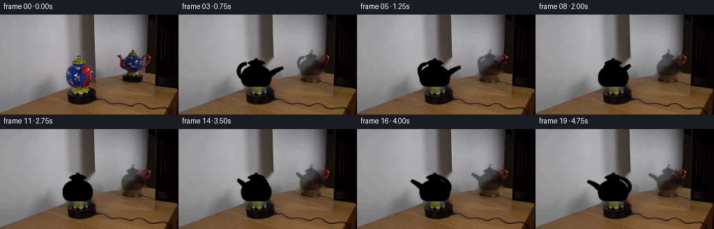
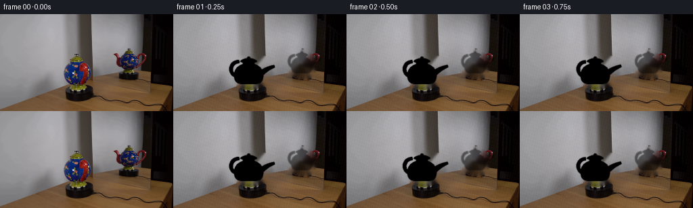
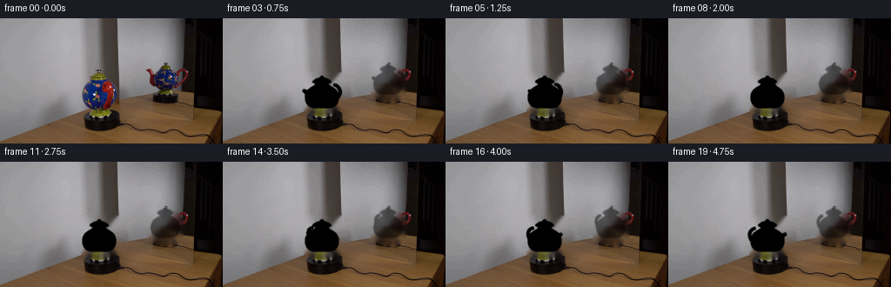
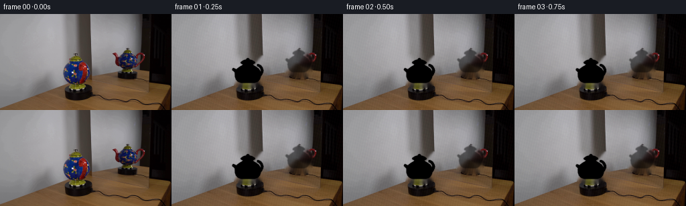

CODING AGENTS AS PIXEL WORLD MODELS
traex/DeepSeek-V4.1-Flash · 0122
点击播放 · 原生 RGB 像素
逐轮保存的候选
回放视频、检查图与代码变化。
每份候选均可单独播放。实际图片检查记录在下方工具轨迹中。
候选 01播放与检查图
点击播放 · 原生 RGB 像素


展开代码变化
--- 上一保存版本
+++ 本次保存版本
@@ -0,0 +1,420 @@
+from pathlib import Path
+import math
+
+import cv2
+import numpy as np
+from PIL import Image
+
+import artifact_io
+
+
+ROOT = Path(__file__).resolve().parent
+W, H = 256, 144
+SS = 2
+N_FRAMES = 20
+
+
+def normalize(v):
+ v = np.asarray(v, dtype=np.float64)
+ length = np.linalg.norm(v, axis=-1, keepdims=True)
+ return v / np.maximum(length, 1e-9)
+
+
+def make_clean_plate(source):
+ """Remove the two teapot images while retaining the set and table."""
+ mask = np.zeros((H, W), dtype=np.uint8)
+
+ # Main teapot, including the spout and handle.
+ main = np.array(
+ [
+ [87, 71], [92, 65], [100, 61], [110, 59], [124, 59],
+ [134, 62], [140, 72], [142, 87], [139, 100], [132, 107],
+ [120, 110], [105, 109], [94, 105], [87, 97], [84, 85],
+ ],
+ dtype=np.int32,
+ )
+ cv2.fillPoly(mask, [main], 255)
+
+ # The ghost in the angled mirror.
+ reflected = np.array(
+ [
+ [167, 55], [174, 51], [187, 52], [201, 56], [209, 66],
+ [211, 79], [207, 91], [196, 96], [181, 94], [170, 87],
+ [165, 75],
+ ],
+ dtype=np.int32,
+ )
+ cv2.fillPoly(mask, [reflected], 255)
+ mask = cv2.dilate(mask, np.ones((3, 3), np.uint8), iterations=1)
+
+ clean = cv2.inpaint(source, mask, 4, cv2.INPAINT_TELEA)
+
+ # Keep the recovered plate in the character of the dark backdrop.
+ yy, xx = np.mgrid[:H, :W]
+ local_noise = (
+ np.sin(xx * 1.71 + yy * 0.37)
+ + 0.55 * np.sin(xx * 0.43 - yy * 1.19)
+ + 0.25 * np.sin(xx * 3.07 + yy * 2.11)
+ )
+ grain = local_noise[..., None] * np.array([1.8, 1.45, 1.2])
+ clean = np.clip(clean.astype(np.float64) + grain, 0, 255).astype(np.uint8)
+ return clean, mask
+
+
+def transform_vertices(vertices, angle, scale, center, depth_shift=0.0):
+ c, s = math.cos(angle), math.sin(angle)
+ rot_y = np.array([[c, 0.0, s], [0.0, 1.0, 0.0], [-s, 0.0, c]])
+ v = vertices @ rot_y.T
+ v[:, 2] += depth_shift
+
+ perspective = 0.105
+ denom = 1.0 + perspective * v[:, 2]
+ x = center[0] + scale * v[:, 0] / denom
+ y = center[1] - scale * v[:, 1] / denom
+ return np.column_stack((x * SS, y * SS, v[:, 2])), v
+
+
+def lathe_mesh(profile, segments=36):
+ verts = []
+ for j, (radius, y) in enumerate(profile):
+ for i in range(segments):
+ a = 2.0 * math.pi * i / segments
+ verts.append((radius * math.cos(a), y, radius * math.sin(a)))
+ verts = np.asarray(verts, dtype=np.float64)
+
+ faces = []
+ for j in range(len(profile) - 1):
+ for i in range(segments):
+ ni = (i + 1) % segments
+ a = j * segments + i
+ b = j * segments + ni
+ c = (j + 1) * segments + ni
+ d = (j + 1) * segments + i
+ faces.append((a, b, c))
+ faces.append((a, c, d))
+ return verts, np.asarray(faces, dtype=np.int32)
+
+
+def tube_mesh(points, radii, sides=8):
+ points = np.asarray(points, dtype=np.float64)
+ radii = np.asarray(radii, dtype=np.float64)
+ verts = []
+ for j, (p, radius) in enumerate(zip(points, radii)):
+ if j == 0:
+ tangent = points[1] - points[0]
+ elif j == len(points) - 1:
+ tangent = points[-1] - points[-2]
+ else:
+ tangent = points[j + 1] - points[j - 1]
+ tangent = tangent / np.linalg.norm(tangent)
+ helper = np.array([0.0, 1.0, 0.0])
+ if abs(np.dot(helper, tangent)) > 0.92:
+ helper = np.array([0.0, 0.0, 1.0])
+ u = normalize(np.cross(tangent, helper))
+ v = normalize(np.cross(tangent, u))
+ for i in range(sides):
+ a = 2.0 * math.pi * i / sides
+ verts.append(p + radius * (math.cos(a) * u + math.sin(a) * v))
+
+ faces = []
+ for j in range(len(points) - 1):
+ for i in range(sides):
+ ni = (i + 1) % sides
+ a = j * sides + i
+ b = j * sides + ni
+ c = (j + 1) * sides + ni
+ d = (j + 1) * sides + i
+ faces.append((a, b, c))
+ faces.append((a, c, d))
+ return np.asarray(verts), np.asarray(faces, dtype=np.int32)
+
+
+def combine_meshes(parts):
+ all_vertices = []
+ all_faces = []
+ all_material = []
+ all_vertex_material = []
+ offset = 0
+ for vertices, faces, material in parts:
+ all_vertices.append(vertices)
+ all_faces.append(faces + offset)
+ all_material.extend([material] * len(faces))
+ all_vertex_material.extend([material] * len(vertices))
+ offset += len(vertices)
+ return (
+ np.concatenate(all_vertices, axis=0),
+ np.concatenate(all_faces, axis=0),
+ np.asarray(all_material, dtype=np.int8),
+ np.asarray(all_vertex_material, dtype=np.int8),
+ )
+
+
+def build_teapot():
+ profile = np.array(
+ [
+ [0.42, 0.02], [0.58, 0.06], [0.69, 0.14], [0.76, 0.27],
+ [0.79, 0.43], [0.79, 0.59], [0.74, 0.75], [0.64, 0.91],
+ [0.48, 1.03], [0.34, 1.09], [0.30, 1.16], [0.37, 1.20],
+ ],
+ dtype=np.float64,
+ )
+ body, body_faces = lathe_mesh(profile, segments=40)
+
+ lid_profile = np.array(
+ [[0.38, 1.20], [0.46, 1.23], [0.43, 1.29], [0.31, 1.36],
+ [0.18, 1.40], [0.10, 1.42]],
+ dtype=np.float64,
+ )
+ lid, lid_faces = lathe_mesh(lid_profile, segments=32)
+
+ knob_theta = np.linspace(0.0, math.pi, 9)
+ knob_phi = np.linspace(0.0, 2.0 * math.pi, 20, endpoint=False)
+ knob_vertices = []
+ knob_faces = []
+ for i, theta in enumerate(knob_theta):
+ for phi in knob_phi:
+ knob_vertices.append(
+ (
+ 0.10 * math.sin(theta) * math.cos(phi),
+ 1.43 + 0.085 * math.cos(theta),
+ 0.10 * math.sin(theta) * math.sin(phi),
+ )
+ )
+ for i in range(len(knob_theta) - 1):
+ for j in range(len(knob_phi)):
+ nj = (j + 1) % len(knob_phi)
+ a = i * len(knob_phi) + j
+ b = i * len(knob_phi) + nj
+ c = (i + 1) * len(knob_phi) + nj
+ d = (i + 1) * len(knob_phi) + j
+ knob_faces.append((a, b, c))
+ knob_faces.append((a, c, d))
+
+ spout_points = []
+ spout_radii = []
+ for i in range(14):
+ t = i / 13.0
+ spout_points.append(
+ (
+ 0.62 + 0.76 * t,
+ 0.57 + 0.42 * t + 0.05 * math.sin(math.pi * t),
+ 0.02 + 0.10 * t,
+ )
+ )
+ spout_radii.append(0.17 * (1.0 - 0.54 * t))
+ spout, spout_faces = tube_mesh(spout_points, spout_radii, sides=9)
+
+ handle_points = []
+ handle_radii = []
+ for i in range(24):
+ t = i / 23.0
+ a = math.pi * (0.20 + 0.78 * t)
+ handle_points.append(
+ (
+ -0.48 - 0.48 * math.sin(a),
+ 0.82 - 0.42 * math.cos(a),
+ -0.02 + 0.05 * math.sin(2.0 * math.pi * t),
+ )
+ )
+ handle_radii.append(0.095 + 0.015 * math.sin(math.pi * t))
+ handle, handle_faces = tube_mesh(handle_points, handle_radii, sides=7)
+
+ return combine_meshes(
+ [
+ (body, body_faces, 0),
+ (lid, lid_faces, 0),
+ (np.asarray(knob_vertices), np.asarray(knob_faces, dtype=np.int32), 0),
+ (spout, spout_faces, 1),
+ (handle, handle_faces, 2),
+ ]
+ )
+
+
+def compute_vertex_colors(vertices, faces, vertex_materials, angle):
+ normals = np.zeros_like(vertices)
+ tri = vertices[faces]
+ face_normals = np.cross(tri[:, 1] - tri[:, 0], tri[:, 2] - tri[:, 0])
+ face_normals = normalize(face_normals)
+ for i in range(3):
+ np.add.at(normals, faces[:, i], face_normals)
+ normals = normalize(normals)
+
+ c, s = math.cos(angle), math.sin(angle)
+ normals = normals @ np.array([[c, 0.0, -s], [0.0, 1.0, 0.0], [s, 0.0, c]])
+
+ nx, ny, nz = normals.T
+ view = np.array([0.0, 0.05, 1.0])
+ view = view / np.linalg.norm(view)
+ ndv = np.clip(normals @ view, 0.0, 1.0)
+ fresnel = (1.0 - ndv) ** 2.4
+
+ light_a = normalize(np.array([-0.75, 0.35, 0.80]))
+ light_b = normalize(np.array([0.85, 0.55, 0.35]))
+ diffuse_a = np.clip(normals @ light_a, 0.0, 1.0)
+ diffuse_b = np.clip(normals @ light_b, 0.0, 1.0)
+
+ # Chrome-like environment: cobalt on one side, warm red on the other.
+ blue_strength = np.clip((-nx - 0.03) / 0.90, 0.0, 1.0) ** 1.25
+ red_strength = np.clip((nx - 0.08) / 0.72, 0.0, 1.0) ** 1.55
+ warm_top = np.clip((ny + 0.12) / 0.95, 0.0, 1.0)
+
+ base = np.empty((len(vertices), 3), dtype=np.float64)
+ base[:] = np.array([0.17, 0.19, 0.22])
+ base += blue_strength[:, None] * np.array([-0.12, 0.00, 0.32])
+ base += red_strength[:, None] * np.array([0.47, -0.05, -0.12])
+ base += warm_top[:, None] * np.array([0.16, 0.11, 0.02])
+ base += (0.14 * diffuse_a + 0.08 * diffuse_b)[:, None] * np.array([1.0, 0.93, 0.78])
+ base += fresnel[:, None] * np.array([0.55, 0.57, 0.60])
+
+ # Painted reflection bands travel with the metal surface as it turns.
+ band_phase = np.arctan2(nx, nz)
+ bands = (
+ 0.13 * np.exp(-((band_phase - 0.35) / 0.12) ** 2)
+ + 0.12 * np.exp(-((band_phase + 2.3) / 0.17) ** 2)
+ )
+ base += bands[:, None] * np.array([0.55, 0.32, 0.10])
+
+ spec_a = np.clip(normals @ normalize(light_a + view), 0.0, 1.0) ** 42
+ spec_b = np.clip(normals @ normalize(light_b + view), 0.0, 1.0) ** 24
+ base += (1.55 * spec_a + 0.62 * spec_b)[:, None] * np.array([1.0, 0.98, 0.92])
+
+ # Spout and handle are darker, with a restrained red edge.
+ dark = vertex_materials != 0
+ base[dark] *= 0.58
+ base[dark] += red_strength[dark, None] * np.array([0.12, 0.0, 0.0])
+ base[dark] += fresnel[dark, None] * np.array([0.18, 0.17, 0.16])
+ return np.clip(base, 0.0, 1.0)
+
+
+def rasterize(vertices, faces, colors, center_offset=(0, 0), opacity=1.0):
+ canvas = np.zeros((H * SS, W * SS, 3), dtype=np.float64)
+ alpha = np.zeros((H * SS, W * SS), dtype=np.float64)
+ zbuf = np.full((H * SS, W * SS), -1e9, dtype=np.float64)
+
+ projected = vertices.copy()
+ projected[:, 0] += center_offset[0] * SS
+ projected[:, 1] += center_offset[1] * SS
+ screen = projected[:, :2]
+ z = projected[:, 2]
+
+ for face in faces:
+ p0, p1, p2 = screen[face]
+ min_x = max(0, int(math.floor(min(p0[0], p1[0], p2[0]))))
+ max_x = min(W * SS - 1, int(math.ceil(max(p0[0], p1[0], p2[0]))))
+ min_y = max(0, int(math.floor(min(p0[1], p1[1], p2[1]))))
+ max_y = min(H * SS - 1, int(math.ceil(max(p0[1], p1[1], p2[1]))))
+ if min_x > max_x or min_y > max_y:
+ continue
+
+ ax, ay = p0
+ bx, by = p1
+ cx, cy = p2
+ denom = (by - cy) * (ax - cx) + (cx - bx) * (ay - cy)
+ if abs(denom) < 1e-9:
+ continue
+
+ xs = np.arange(min_x, max_x + 1, dtype=np.float64) + 0.5
+ ys = np.arange(min_y, max_y + 1, dtype=np.float64) + 0.5
+ xg, yg = np.meshgrid(xs, ys)
+ w0 = ((by - cy) * (xg - cx) + (cx - bx) * (yg - cy)) / denom
+ w1 = ((cy - ay) * (xg - cx) + (ax - cx) * (yg - cy)) / denom
+ w2 = 1.0 - w0 - w1
+ inside = (w0 >= -1e-6) & (w1 >= -1e-6) & (w2 >= -1e-6)
+ if not np.any(inside):
+ continue
+
+ zz = w0 * z[face[0]] + w1 * z[face[1]] + w2 * z[face[2]]
+ yy, xx = np.where(inside & (zz > zbuf[min_y:max_y + 1, min_x:max_x + 1]))
+ if len(xx) == 0:
+ continue
+ gx = xx + min_x
+ gy = yy + min_y
+ zbuf[gy, gx] = zz[yy, xx]
+ rgb = (
+ w0[yy, xx, None] * colors[face[0]]
+ + w1[yy, xx, None] * colors[face[1]]
+ + w2[yy, xx, None] * colors[face[2]]
+ )
+ canvas[gy, gx] = rgb
+ alpha[gy, gx] = opacity
+
+ return canvas, alpha
+
+
+def add_contact_shadow(frame, center_x, center_y, angle, strength=1.0):
+ yy, xx = np.mgrid[:H, :W]
+ dx = (xx - center_x) / 30.0
+ dy = (yy - center_y) / 7.0
+ shadow = np.exp(-(dx * dx + dy * dy) * 2.1) * strength
+ tint = np.array([0.0, 0.0, 0.0])
+ frame = frame * (1.0 - 0.30 * shadow[..., None]) + tint * (0.30 * shadow[..., None])
+ return frame
+
+
+def render_teapot(base, vertices, faces, colors, center, scale, angle, shadow=True):
+ projected, _ = transform_vertices(vertices, angle, scale, center)
+ canvas, alpha = rasterize(projected, faces, colors)
+ canvas = cv2.GaussianBlur(canvas, (0, 0), 0.45 * SS)
+ alpha = cv2.GaussianBlur(alpha, (0, 0), 0.40 * SS)
+ canvas = cv2.resize(canvas, (W, H), interpolation=cv2.INTER_AREA)
+ alpha = cv2.resize(alpha, (W, H), interpolation=cv2.INTER_AREA)
+ alpha = np.clip(alpha * 1.12, 0.0, 1.0)
+
+ out = base.astype(np.float64)
+ if shadow:
+ out = add_contact_shadow(out, center[0], center[1] + scale * 0.20, angle)
+ out = out * (1.0 - alpha[..., None]) + canvas * alpha[..., None]
+ return out, alpha
+
+
+def render_reflection(base, vertices, faces, colors, angle):
+ # The mirror is angled to the right of the subject and dims the image.
+ center = (190.0, 88.5)
+ projected, _ = transform_vertices(vertices, angle + math.radians(4.0), 22.0, center, -0.05)
+ # A weak horizontal squeeze gives the reflection a believable oblique plane.
+ projected[:, 0] = center[0] * SS + (projected[:, 0] - center[0] * SS) * 0.91
+ reflection_colors = np.clip(colors * 0.61 + np.array([0.035, 0.042, 0.052]), 0.0, 1.0)
+ canvas, alpha = rasterize(projected, faces, reflection_colors, opacity=0.83)
+ canvas = cv2.GaussianBlur(canvas, (0, 0), 0.85 * SS)
+ alpha = cv2.GaussianBlur(alpha, (0, 0), 0.60 * SS)
+ canvas = cv2.resize(canvas, (W, H), interpolation=cv2.INTER_AREA)
+ alpha = cv2.resize(alpha, (W, H), interpolation=cv2.INTER_AREA)
+ alpha = np.clip(alpha * 0.58, 0.0, 0.58)
+
+ # A faint vertical mirror sheen keeps the reflected image integrated.
+ yy, xx = np.mgrid[:H, :W]
+ sheen = 0.018 * np.exp(-((xx - 190.0) / 44.0) ** 2) * np.exp(-((yy - 75.0) / 52.0) ** 2)
+ out = base.astype(np.float64) * (1.0 + sheen[..., None])
+ out = out * (1.0 - alpha[..., None]) + canvas * alpha[..., None]
+ return out
+
+
+def main():
+ source = np.asarray(Image.open(ROOT / "first_frame.png").convert("RGB"), dtype=np.uint8)
+ clean, _ = make_clean_plate(source)
+ vertices, faces, materials, vertex_materials = build_teapot()
+
+ frames = [source.copy()]
+ base_scale = 27.5
+ center = (111.5, 104.5)
+ for index in range(1, N_FRAMES):
+ t = index / (N_FRAMES - 1)
+ # A smooth quarter-turn clockwise, with the glossy bands following the metal.
+ eased = t * t * (3.0 - 2.0 * t)
+ angle = math.radians(3.0 + 155.0 * eased)
+ colors = compute_vertex_colors(vertices, faces, vertex_materials, angle)
+ frame, _ = render_teapot(clean, vertices, faces, colors, center, base_scale, angle)
+ frame = render_reflection(frame, vertices, faces, colors, angle)
+
+ # Very gentle exposure drift; the camera and set otherwise remain locked.
+ exposure = 1.0 + 0.006 * math.sin(2.0 * math.pi * t)
+ frame = np.clip(frame * exposure, 0, 255).astype(np.uint8)
+ frames.append(frame)
+
+ frames = np.stack(frames, axis=0)
+ frames[0] = source
+ artifact_io.save(frames, ROOT)
+
+
+if __name__ == "__main__":
+ main()
候选 02播放与检查图
点击播放 · 原生 RGB 像素
展开代码变化
--- 上一保存版本
+++ 本次保存版本
@@ -152,17 +152,17 @@
def build_teapot():
profile = np.array(
[
- [0.42, 0.02], [0.58, 0.06], [0.69, 0.14], [0.76, 0.27],
- [0.79, 0.43], [0.79, 0.59], [0.74, 0.75], [0.64, 0.91],
- [0.48, 1.03], [0.34, 1.09], [0.30, 1.16], [0.37, 1.20],
+ [0.39, 0.02], [0.54, 0.06], [0.67, 0.14], [0.76, 0.27],
+ [0.81, 0.43], [0.82, 0.59], [0.78, 0.75], [0.68, 0.91],
+ [0.52, 1.03], [0.38, 1.10], [0.31, 1.18], [0.39, 1.23],
],
dtype=np.float64,
)
body, body_faces = lathe_mesh(profile, segments=40)
lid_profile = np.array(
- [[0.38, 1.20], [0.46, 1.23], [0.43, 1.29], [0.31, 1.36],
- [0.18, 1.40], [0.10, 1.42]],
+ [[0.40, 1.23], [0.47, 1.27], [0.43, 1.34], [0.31, 1.42],
+ [0.18, 1.47], [0.10, 1.49]],
dtype=np.float64,
)
lid, lid_faces = lathe_mesh(lid_profile, segments=32)
@@ -176,7 +176,7 @@
knob_vertices.append(
(
0.10 * math.sin(theta) * math.cos(phi),
- 1.43 + 0.085 * math.cos(theta),
+ 1.50 + 0.080 * math.cos(theta),
0.10 * math.sin(theta) * math.sin(phi),
)
)
@@ -192,31 +192,31 @@
spout_points = []
spout_radii = []
- for i in range(14):
- t = i / 13.0
+ for i in range(13):
+ t = i / 12.0
spout_points.append(
(
- 0.62 + 0.76 * t,
- 0.57 + 0.42 * t + 0.05 * math.sin(math.pi * t),
- 0.02 + 0.10 * t,
+ -0.54 - 0.42 * t,
+ 0.53 + 0.38 * t + 0.045 * math.sin(math.pi * t),
+ -0.02 + 0.10 * t,
)
)
- spout_radii.append(0.17 * (1.0 - 0.54 * t))
+ spout_radii.append(0.16 * (1.0 - 0.48 * t))
spout, spout_faces = tube_mesh(spout_points, spout_radii, sides=9)
handle_points = []
handle_radii = []
- for i in range(24):
- t = i / 23.0
- a = math.pi * (0.20 + 0.78 * t)
+ for i in range(22):
+ t = i / 21.0
+ a = math.pi * (0.12 + 0.84 * t)
handle_points.append(
(
- -0.48 - 0.48 * math.sin(a),
- 0.82 - 0.42 * math.cos(a),
- -0.02 + 0.05 * math.sin(2.0 * math.pi * t),
+ 0.54 + 0.34 * math.sin(a),
+ 0.78 - 0.35 * math.cos(a),
+ -0.03 + 0.04 * math.sin(2.0 * math.pi * t),
)
)
- handle_radii.append(0.095 + 0.015 * math.sin(math.pi * t))
+ handle_radii.append(0.075 + 0.012 * math.sin(math.pi * t))
handle, handle_faces = tube_mesh(handle_points, handle_radii, sides=7)
return combine_meshes(
@@ -259,30 +259,30 @@
warm_top = np.clip((ny + 0.12) / 0.95, 0.0, 1.0)
base = np.empty((len(vertices), 3), dtype=np.float64)
- base[:] = np.array([0.17, 0.19, 0.22])
- base += blue_strength[:, None] * np.array([-0.12, 0.00, 0.32])
- base += red_strength[:, None] * np.array([0.47, -0.05, -0.12])
- base += warm_top[:, None] * np.array([0.16, 0.11, 0.02])
- base += (0.14 * diffuse_a + 0.08 * diffuse_b)[:, None] * np.array([1.0, 0.93, 0.78])
- base += fresnel[:, None] * np.array([0.55, 0.57, 0.60])
+ base[:] = np.array([0.055, 0.060, 0.070])
+ base += blue_strength[:, None] * np.array([0.00, 0.075, 0.305])
+ base += red_strength[:, None] * np.array([0.485, -0.005, -0.010])
+ base += warm_top[:, None] * np.array([0.105, 0.082, 0.018])
+ base += (0.055 * diffuse_a + 0.030 * diffuse_b)[:, None] * np.array([1.0, 0.93, 0.78])
+ base += fresnel[:, None] * np.array([0.085, 0.095, 0.110])
# Painted reflection bands travel with the metal surface as it turns.
band_phase = np.arctan2(nx, nz)
bands = (
- 0.13 * np.exp(-((band_phase - 0.35) / 0.12) ** 2)
- + 0.12 * np.exp(-((band_phase + 2.3) / 0.17) ** 2)
- )
- base += bands[:, None] * np.array([0.55, 0.32, 0.10])
-
- spec_a = np.clip(normals @ normalize(light_a + view), 0.0, 1.0) ** 42
- spec_b = np.clip(normals @ normalize(light_b + view), 0.0, 1.0) ** 24
- base += (1.55 * spec_a + 0.62 * spec_b)[:, None] * np.array([1.0, 0.98, 0.92])
+ 0.16 * np.exp(-((band_phase - 0.35) / 0.10) ** 2)
+ + 0.14 * np.exp(-((band_phase + 2.3) / 0.14) ** 2)
+ )
+ base += bands[:, None] * np.array([0.48, 0.40, 0.06])
+
+ spec_a = np.clip(normals @ normalize(light_a + view), 0.0, 1.0) ** 64
+ spec_b = np.clip(normals @ normalize(light_b + view), 0.0, 1.0) ** 34
+ base += (0.88 * spec_a + 0.32 * spec_b)[:, None] * np.array([1.0, 0.98, 0.94])
# Spout and handle are darker, with a restrained red edge.
dark = vertex_materials != 0
- base[dark] *= 0.58
- base[dark] += red_strength[dark, None] * np.array([0.12, 0.0, 0.0])
- base[dark] += fresnel[dark, None] * np.array([0.18, 0.17, 0.16])
+ base[dark] *= 0.72
+ base[dark] += red_strength[dark, None] * np.array([0.10, 0.0, 0.0])
+ base[dark] += fresnel[dark, None] * np.array([0.055, 0.050, 0.045])
return np.clip(base, 0.0, 1.0)
@@ -369,8 +369,8 @@
def render_reflection(base, vertices, faces, colors, angle):
# The mirror is angled to the right of the subject and dims the image.
- center = (190.0, 88.5)
- projected, _ = transform_vertices(vertices, angle + math.radians(4.0), 22.0, center, -0.05)
+ center = (190.0, 88.0)
+ projected, _ = transform_vertices(vertices, angle + math.radians(4.0), 22.5, center, -0.05)
# A weak horizontal squeeze gives the reflection a believable oblique plane.
projected[:, 0] = center[0] * SS + (projected[:, 0] - center[0] * SS) * 0.91
reflection_colors = np.clip(colors * 0.61 + np.array([0.035, 0.042, 0.052]), 0.0, 1.0)
@@ -395,8 +395,8 @@
vertices, faces, materials, vertex_materials = build_teapot()
frames = [source.copy()]
- base_scale = 27.5
- center = (111.5, 104.5)
+ base_scale = 24.0
+ center = (114.0, 104.0)
for index in range(1, N_FRAMES):
t = index / (N_FRAMES - 1)
# A smooth quarter-turn clockwise, with the glossy bands following the metal.
@@ -406,9 +406,7 @@
frame, _ = render_teapot(clean, vertices, faces, colors, center, base_scale, angle)
frame = render_reflection(frame, vertices, faces, colors, angle)
- # Very gentle exposure drift; the camera and set otherwise remain locked.
- exposure = 1.0 + 0.006 * math.sin(2.0 * math.pi * t)
- frame = np.clip(frame * exposure, 0, 255).astype(np.uint8)
+ frame = np.clip(frame, 0, 255).astype(np.uint8)
frames.append(frame)
frames = np.stack(frames, axis=0)
候选 03播放与检查图
点击播放 · 原生 RGB 像素

展开代码变化
--- 上一保存版本
+++ 本次保存版本
@@ -254,17 +254,22 @@
diffuse_b = np.clip(normals @ light_b, 0.0, 1.0)
# Chrome-like environment: cobalt on one side, warm red on the other.
- blue_strength = np.clip((-nx - 0.03) / 0.90, 0.0, 1.0) ** 1.25
- red_strength = np.clip((nx - 0.08) / 0.72, 0.0, 1.0) ** 1.55
- warm_top = np.clip((ny + 0.12) / 0.95, 0.0, 1.0)
+ angle_x = np.arctan2(nx, np.sqrt(ny * ny + nz * nz))
+ blue_strength = np.clip((-nx - 0.02) / 0.84, 0.0, 1.0) ** 0.70
+ red_strength = np.clip((nx - 0.07) / 0.66, 0.0, 1.0) ** 1.05
+ warm_top = np.clip((ny + 0.18) / 0.95, 0.0, 1.0)
base = np.empty((len(vertices), 3), dtype=np.float64)
- base[:] = np.array([0.055, 0.060, 0.070])
- base += blue_strength[:, None] * np.array([0.00, 0.075, 0.305])
- base += red_strength[:, None] * np.array([0.485, -0.005, -0.010])
- base += warm_top[:, None] * np.array([0.105, 0.082, 0.018])
- base += (0.055 * diffuse_a + 0.030 * diffuse_b)[:, None] * np.array([1.0, 0.93, 0.78])
- base += fresnel[:, None] * np.array([0.085, 0.095, 0.110])
+ base[:] = np.array([0.050, 0.055, 0.065])
+ base += blue_strength[:, None] * np.array([0.015, 0.095, 0.335])
+ base += red_strength[:, None] * np.array([0.475, 0.005, 0.015])
+ base += warm_top[:, None] * np.array([0.110, 0.085, 0.018])
+ base += (0.070 * diffuse_a + 0.040 * diffuse_b)[:, None] * np.array([1.0, 0.93, 0.78])
+ base += fresnel[:, None] * np.array([0.090, 0.100, 0.115])
+
+ # Broad reflected window highlights occupy the upper half of the body.
+ broad = np.exp(-((angle_x - 0.12) / 0.35) ** 2) * np.clip((ny + 0.20) / 0.9, 0.0, 1.0)
+ base += broad[:, None] * np.array([0.055, 0.060, 0.075])
# Painted reflection bands travel with the metal surface as it turns.
band_phase = np.arctan2(nx, nz)
@@ -274,9 +279,9 @@
)
base += bands[:, None] * np.array([0.48, 0.40, 0.06])
- spec_a = np.clip(normals @ normalize(light_a + view), 0.0, 1.0) ** 64
- spec_b = np.clip(normals @ normalize(light_b + view), 0.0, 1.0) ** 34
- base += (0.88 * spec_a + 0.32 * spec_b)[:, None] * np.array([1.0, 0.98, 0.94])
+ spec_a = np.clip(normals @ normalize(light_a + view), 0.0, 1.0) ** 44
+ spec_b = np.clip(normals @ normalize(light_b + view), 0.0, 1.0) ** 26
+ base += (0.92 * spec_a + 0.38 * spec_b)[:, None] * np.array([1.0, 0.98, 0.94])
# Spout and handle are darker, with a restrained red edge.
dark = vertex_materials != 0
候选 04播放与检查图
点击播放 · 原生 RGB 像素

展开代码变化
--- 上一保存版本
+++ 本次保存版本
@@ -240,6 +240,7 @@
normals = normalize(normals)
c, s = math.cos(angle), math.sin(angle)
+ object_normals = normals.copy()
normals = normals @ np.array([[c, 0.0, -s], [0.0, 1.0, 0.0], [s, 0.0, c]])
nx, ny, nz = normals.T
@@ -271,13 +272,19 @@
broad = np.exp(-((angle_x - 0.12) / 0.35) ** 2) * np.clip((ny + 0.20) / 0.9, 0.0, 1.0)
base += broad[:, None] * np.array([0.055, 0.060, 0.075])
- # Painted reflection bands travel with the metal surface as it turns.
- band_phase = np.arctan2(nx, nz)
- bands = (
- 0.16 * np.exp(-((band_phase - 0.35) / 0.10) ** 2)
- + 0.14 * np.exp(-((band_phase + 2.3) / 0.14) ** 2)
- )
- base += bands[:, None] * np.array([0.48, 0.40, 0.06])
+ # A glossy environmental band follows the turning metal surface.
+ object_x = object_normals[:, 0]
+ object_z = object_normals[:, 2]
+ object_phase = np.arctan2(object_x, object_z)
+ band = np.exp(-((object_phase - 0.25) / 0.18) ** 2)
+ base += band[:, None] * np.array([0.23, 0.16, 0.02])
+
+ # Small, bright studio reflections make the rotation legible at 4 fps.
+ panel_phase = object_phase + angle
+ panel_a = np.exp(-((np.mod(panel_phase + math.pi, 2.0 * math.pi) - math.pi + 0.42) / 0.17) ** 2)
+ panel_b = np.exp(-((np.mod(panel_phase + math.pi, 2.0 * math.pi) - math.pi - 0.48) / 0.12) ** 2)
+ base += panel_a[:, None] * np.array([0.25, 0.22, 0.20])
+ base += panel_b[:, None] * np.array([0.17, 0.14, 0.08])
spec_a = np.clip(normals @ normalize(light_a + view), 0.0, 1.0) ** 44
spec_b = np.clip(normals @ normalize(light_b + view), 0.0, 1.0) ** 26
候选 06播放与检查图
点击播放 · 原生 RGB 像素

展开代码变化
--- 上一保存版本
+++ 本次保存版本
@@ -281,10 +281,11 @@
# Small, bright studio reflections make the rotation legible at 4 fps.
panel_phase = object_phase + angle
- panel_a = np.exp(-((np.mod(panel_phase + math.pi, 2.0 * math.pi) - math.pi + 0.42) / 0.17) ** 2)
- panel_b = np.exp(-((np.mod(panel_phase + math.pi, 2.0 * math.pi) - math.pi - 0.48) / 0.12) ** 2)
- base += panel_a[:, None] * np.array([0.25, 0.22, 0.20])
- base += panel_b[:, None] * np.array([0.17, 0.14, 0.08])
+ wrapped = np.mod(panel_phase + math.pi, 2.0 * math.pi) - math.pi
+ panel_a = np.exp(-((wrapped - 0.16) / 0.21) ** 2)
+ panel_b = np.exp(-((wrapped + 0.55) / 0.14) ** 2)
+ base += panel_a[:, None] * np.array([0.34, 0.31, 0.27])
+ base += panel_b[:, None] * np.array([0.20, 0.16, 0.10])
spec_a = np.clip(normals @ normalize(light_a + view), 0.0, 1.0) ** 44
spec_b = np.clip(normals @ normalize(light_b + view), 0.0, 1.0) ** 26
可观测工具轨迹
实际执行的命令与返回图片。
命令 1exit 0
/bin/bash -c "pwd && rg --files -g 'prompt.txt' -g 'GENERATION_RULES.md' -g 'first_frame.png' -g '"'!*.mp4'"' -g '"'!*.webm'"'"
命令 2exit 0
/bin/bash -c 'git status --short && ls -la'
命令 3exit 0
/bin/bash -c 'cat prompt.txt'
命令 4exit 0
/bin/bash -c 'cat GENERATION_RULES.md'
命令 5exit 0
/bin/bash -c "sed -n '1,240p' artifact_io.py && sed -n '1,220p' player_template.html"
命令 6exit 127
/bin/bash -c "file first_frame.png && python - <<'PY'
from PIL import Image
im=Image.open('first_frame.png')
print(im.size, im.mode)
print(im.getbbox())
PY"命令 7exit 0
/bin/bash -c "python - <<'PY'
from PIL import Image
import numpy as np
im=np.asarray(Image.open('first_frame.png').convert('RGB'))
print('shape',im.shape,'dtype',im.dtype)
for y in [0,8,16,24,32,48,64,80,96,112,128,143]:
print(y, im[y].mean(0).round(1), im[y].min(0), im[y].max(0))
print('global',im.mean((0,1)),np.median(im.reshape(-1,3),0))
# dominant quantized colors
q=(im//16)*16
u,c=np.unique(q.reshape(-1,3),axis=0,return_counts=True)
for idx in np.argsort(c)[-20:][::-1]: print(tuple(u[idx]),int(c[idx]))
PY"命令 8exit 0
/bin/bash -c "python - <<'PY'
from PIL import Image
import numpy as np
im=np.asarray(Image.open('first_frame.png').convert('RGB')).astype(float)
y=(im@np.array([.2126,.7152,.0722]))
# 64x36 ascii luminance, character palette
chars=' .:-=+*#%@'
h,w=y.shape
for yy in range(36):
row=''
for xx in range(64):
block=y[yy*h//36:(yy+1)*h//36, xx*w//64:(xx+1)*w//64]
v=block.mean()
row+=chars[min(9,int(v/256*10))]
print(f'{yy:02d} {row}')
PY"命令 9exit 0
/bin/bash -c "python - <<'PY'
from PIL import Image
import numpy as np
im=np.asarray(Image.open('first_frame.png').convert('RGB')).astype(float)
y=(im@np.array([.2126,.7152,.0722]))
# row/column summaries for edge structure
print('row means')
for j in range(0,144,4): print(f'{j:3d} {y[j:j+4].mean():6.1f} {im[j:j+4].mean((0,1)).round(0)}')
print('col means')
for i in range(0,256,8): print(f'{i:3d} {y[:,i:i+8].mean():6.1f} {im[:,i:i+8].mean((0,1)).round(0)}')
PY"命令 10exit 0
/bin/bash -c "python - <<'PY'
try:
import cv2; print('cv2',cv2.__version__)
except Exception as e: print('no cv2',e)
try:
import scipy; print('scipy',scipy.__version__)
except Exception as e: print('no scipy',e)
try:
import moviepy; print('moviepy',moviepy.__version__)
except Exception as e: print('no moviepy',e)
PY"命令 11exit 0
/bin/bash -c "python - <<'PY'
from PIL import Image
import numpy as np, colorsys
im=np.asarray(Image.open('first_frame.png').convert('RGB')).astype(float)
# sample 64x36 block medians and map to broad semantic labels based RGB/HSV
h,w=im.shape[:2]
chars='KkGgBbYyOoRrMmPpWw' # rough
for yy in range(36):
row=''
for xx in range(64):
b=im[yy*h//36:(yy+1)*h//36, xx*w//64:(xx+1)*w//64]
rgb=np.median(b.reshape(-1,3),0)/255
hh,ss,vv=colorsys.rgb_to_hsv(*rgb)
if vv<.12: c='K'
elif ss<.10:
c=' ' if vv<.35 else ('.' if vv<.55 else (':' if vv<.7 else ('=' if vv<.82 else '#')))
elif hh<.07 or hh>=.95: c='R' if ss>.45 else 'r'
elif hh<.14: c='O' if ss>.45 else 'o'
elif hh<.22: c='Y' if ss>.45 else 'y'
elif hh<.45: c='G'
elif hh<.7: c='B'
else: c='P'
row+=c
print(f'{yy:02d} {row}')
PY"命令 12exit 0
/bin/bash -c "python - <<'PY'
from PIL import Image
import numpy as np
im=np.asarray(Image.open('first_frame.png').convert('RGB'))
# print exact crop 70:200, 0:144 as 65x36 blocks of rgb medians + luminance chars
y=(im.astype(float)@np.array([.2126,.7152,.0722]))
chars=' .:-=+*#%@'
x0,x1=72,200
for yy in range(36):
row=''
for xx in range(48):
xa=x0+xx*(x1-x0)//48; xb=x0+(xx+1)*(x1-x0)//48
ya=yy*144//36; yb=(yy+1)*144//36
v=y[ya:yb,xa:xb].mean()
row+=chars[min(9,int(v/256*10))]
print(f'{yy:02d} {row}')
PY"命令 13exit 0
/bin/bash -c "python - <<'PY'
import cv2, numpy as np
from PIL import Image
im=np.asarray(Image.open('first_frame.png').convert('RGB'))
g=cv2.cvtColor(im,cv2.COLOR_RGB2GRAY)
e=cv2.Canny(g,40,100)
# ascii edges downsample 128x72 max pooled
for yy in range(36):
row=''
for xx in range(64):
b=e[yy*4:(yy+1)*4,xx*4:(xx+1)*4]
row+='#' if b.max() else ' '
print(f'{yy:02d} {row}')
PY"命令 14exit 0
/bin/bash -c "python - <<'PY'
from PIL import Image
import numpy as np
im=np.asarray(Image.open('first_frame.png').convert('RGB')).astype(float)
g=im@np.array([.2126,.7152,.0722])
# sample patches: source likely teapot at x=124..159 y=52..94; mirror x=168..211 y=38..98
# print edge magnitude and color at patch grid
for name,x0,x1,y0,y1 in [('teapot',120,166,45,99),('mirror',164,218,30,103),('platform',102,167,90,128)]:
print('\\n',name)
for y in range(y0,y1,6):
row=''
for x in range(x0,x1,4):
rgb=im[y:y+6,x:x+4].mean((0,1))
r,gc,b=rgb
# classify
if max(rgb)<25:c='K'
elif max(rgb)-min(rgb)<12:c=' '
elif r>gc*1.35 and r>b*1.35:c='R'
elif r>b*1.25:c='O'
elif gc>r*1.12:c='G'
elif b>r*1.12:c='B'
else:c='.'
row+=c
print(f'{y:3d} {row}')
PY"命令 15exit 0
/bin/bash -c "python - <<'PY'
from PIL import Image
import numpy as np, cv2
im=np.asarray(Image.open('first_frame.png').convert('RGB'))
# masks and bboxes
r,g,b=[im[:,:,i].astype(int) for i in range(3)]
masks={
'black': (im.max(2)<30),
'dark': (im.max(2)<65),
'warm': ((r>g+15)&(r>b+25)&(r>55)),
'orange': ((r>g+20)&(g>b+10)&(r>75)),
'graylight': ((abs(r-g)<12)&(abs(g-b)<12)&(r>90)),
'bluish': (b>r+10),
}
for n,m in masks.items():
ys,xs=np.where(m)
print(n,'count',len(xs),'bbox', (xs.min(),ys.min(),xs.max(),ys.max()) if len(xs) else None)
# per row counts quartiles
if len(xs):
print(' xpct',np.percentile(xs,[1,5,25,50,75,95,99]).round(1),'ypct',np.percentile(ys,[1,5,25,50,75,95,99]).round(1))
PY"命令 16exit 0
/bin/bash -c "python - <<'PY'
from PIL import Image
import numpy as np, cv2
im=np.asarray(Image.open('first_frame.png').convert('RGB'))
# save magnified crops only for own numerical inspection via ascii color map
for name,(x0,y0,x1,y1) in {'teapot':(115,42,165,105),'mirror':(158,28,222,110),'platform':(85,86,175,139)}.items():
c=im[y0:y1,x0:x1]
Image.fromarray(c).resize((c.shape[1]*8,c.shape[0]*8),Image.Resampling.NEAREST).save(f'.tmp/{name}_crop.png')
print(name,c.shape)
# kmeans colors in center
pix=im.reshape(-1,3).astype(np.float32)
# rgb to lab then kmeans
lab=cv2.cvtColor(im,cv2.COLOR_RGB2LAB).reshape(-1,3).astype(np.float32)
crit=(cv2.TERM_CRITERIA_EPS+cv2.TERM_CRITERIA_MAX_ITER,100,0.5)
_,labels,centers=cv2.kmeans(lab,10,None,crit,5,cv2.KMEANS_PP_CENTERS)
print('counts',np.bincount(labels.ravel()))
centers_rgb=cv2.cvtColor(np.uint8(centers.reshape(1,-1,3)),cv2.COLOR_LAB2RGB).reshape(-1,3)
for c,n in sorted(zip(centers_rgb,np.bincount(labels.ravel())), key=lambda x:-x[1]): print(c,n)
PY"命令 17exit 0
/bin/bash -c "python - <<'PY'
from PIL import Image
import numpy as np
im=np.asarray(Image.open('first_frame.png').convert('RGB')).astype(int)
# print pixel values sampled on 4x4 and semantic classes
# boundaries detected by vertical/horizontal gradients, list strongest lines
import cv2
g=cv2.cvtColor(im.astype(np.uint8),cv2.COLOR_RGB2GRAY)
gx=cv2.Sobel(g,cv2.CV_32F,1,0,ksize=3); gy=cv2.Sobel(g,cv2.CV_32F,0,1,ksize=3)
for axis, arr in [('x',np.abs(gx).mean(0)),('y',np.abs(gy).mean(1))]:
print(axis,'peaks')
idx=np.argsort(arr)[-25:][::-1]
print(sorted([(int(i),round(float(arr[i]),1)) for i in idx]))
PY"命令 18exit 0
/bin/bash -c "python - <<'PY'
from PIL import Image
import numpy as np, cv2
im=np.asarray(Image.open('first_frame.png').convert('RGB')).astype(float)
# Estimate static scene row/column structure by gradients
g=cv2.cvtColor(im.astype(np.uint8),cv2.COLOR_RGB2GRAY)
# edge map ascii high resolution left half and center
for region in [(0,110,0,144),(90,175,0,144),(150,230,0,120)]:
x0,x1,y0,y1=region
print('\\nREGION',region)
e=cv2.Canny(g[y0:y1,x0:x1],50,120)
for yy in range(0,y1-y0,3):
row=''
for xx in range(0,x1-x0,2):
row+='#' if e[yy:min(yy+3,y1-y0),xx:min(xx+2,x1-x0)].max() else ' '
print(f'{y0+yy:3d} {row}')
PY"命令 19exit 0
/bin/bash -c "python - <<'PY'
from PIL import Image
import numpy as np
im=np.asarray(Image.open('first_frame.png').convert('RGB'))
# row and col color segments at selected lines
for y in [0,30,55,60,70,80,88,96,104,112,120,128,136,143]:
vals=[]
for x in [0,30,60,90,100,110,120,130,140,150,160,170,180,190,200,210,220,230,240,255]:
vals.append(tuple(im[y,x]))
print('Y',y, vals)
PY"命令 20exit 0
/bin/bash -c "python - <<'PY'
from PIL import Image
import numpy as np, cv2
im=np.asarray(Image.open('first_frame.png').convert('RGB'))
lab=cv2.cvtColor(im,cv2.COLOR_RGB2LAB).reshape(-1,3).astype(np.float32)
crit=(cv2.TERM_CRITERIA_EPS+cv2.TERM_CRITERIA_MAX_ITER,200,0.2)
best=None
for seed in range(1,8):
cv2.setRNGSeed(seed)
_,l,c=cv2.kmeans(lab,14,None,crit,10,cv2.KMEANS_PP_CENTERS)
inertia=sum(((lab-l.ravel()[:,None])**2).sum() for _ in [0]) # no
if best is None: best=(l,c)
l,c=best
rgb=cv2.cvtColor(np.uint8(c.reshape(1,-1,3)),cv2.COLOR_LAB2RGB).reshape(-1,3)
counts=np.bincount(l.ravel())
# sort clusters by luminance and print ID mapping
order=np.argsort(rgb@np.array([.2126,.7152,.0722]))
ids={int(o):chr(ord('A')+i) for i,o in enumerate(order)}
for o in order:
print(ids[int(o)],int(o),rgb[o].tolist(),int(counts[o]))
# 2x2 most common cluster, region full and crops
for name,(x0,y0,x1,y1) in [('FULL',(0,0,256,144)),('POT',(88,45,168,125)),('MIRROR',(150,0,230,110)),('PLAT',(70,85,220,144))]:
print('\\n'+name)
for y in range(y0,y1,2):
row=''
for x in range(x0,x1,2):
b=l.reshape(144,256)[y:y+2,x:x+2].ravel()
o=int(np.bincount(b).argmax())
row+=ids[o]
print(f'{y:3d} {row}')
PY"命令 21exit 0
/bin/bash -c "python - <<'PY'
from PIL import Image
import numpy as np
im=np.asarray(Image.open('first_frame.png').convert('RGB')).astype(float)
# Save a few tiny channel printouts as palette using characters for high saturation.
# identify saturated colored connected components
import cv2
hsv=cv2.cvtColor(im.astype(np.uint8),cv2.COLOR_RGB2HSV)
for name,mask in [
('blue',(hsv[:,:,0]>100)&(hsv[:,:,0]<130)&(hsv[:,:,1]>80)),
('red',((hsv[:,:,0]<10)|(hsv[:,:,0]>170))&(hsv[:,:,1]>80)),
('yellow',(hsv[:,:,0]>20)&(hsv[:,:,0]<40)&(hsv[:,:,1]>80)),
('brown',(hsv[:,:,0]>5)&(hsv[:,:,0]<25)&(hsv[:,:,1]>80)),
]:
n,l,st,cen=cv2.connectedComponentsWithStats(mask.astype(np.uint8),8)
comps=sorted([(int(st[i,4]),tuple(map(int,st[i,:4]))) for i in range(1,n)],reverse=True)[:15]
print(name,comps)
PY"命令 22exit 0
/bin/bash -c "python - <<'PY'
from PIL import Image
import numpy as np
im=np.asarray(Image.open('first_frame.png').convert('RGB'))
# print region colors in normalized hex at 3x3 blocks to infer the teapot body
for y in range(52,105,3):
row=[]
for x in range(105,158,4):
b=im[y:y+3,x:x+4].reshape(-1,3)
c=np.median(b,0).astype(int)
row.append('%02x%02x%02x'%tuple(c))
print(f'{y:3d}',' '.join(row))
PY"命令 23exit 0
/bin/bash -c "python - <<'PY'
from PIL import Image
import numpy as np
im=np.asarray(Image.open('first_frame.png').convert('RGB'))
# Find colored reflections to infer teapot shape extents. print mask blue/red/yellow as chars in x80:170,y50:110
r,g,b=[im[:,:,i].astype(int) for i in range(3)]
blue=(b>r+30)&(b>g+20)&(b>60)
red=(r>g+30)&(r>b+30)&(r>50)
yellow=(r>g+10)&(g>b+20)&(r>50)
for name,m in [('B',blue),('R',red),('Y',yellow)]:
print(name)
for y in range(45,111):
row=''.join('#' if m[y,x] else ' ' for x in range(85,171))
print(f'{y:3d} {row}')
PY"命令 24exit 1
/bin/bash -c "python - <<'PY'
import cv2, numpy as np
from PIL import Image
im=np.asarray(Image.open('first_frame.png').convert('RGB'))
mask=np.zeros(im.shape[:2],np.uint8)
rect=(88,52,54,56) # x,y,w,h
bgd=np.zeros((1,65),np.uint8); fgd=np.zeros((1,65),np.uint8)
cv2.grabCut(im,mask,rect,bgd,fgd,8,cv2.GC_INIT_WITH_RECT)
out=np.where((mask==1)|(mask==3),255,0).astype(np.uint8)
# ascii 90..145 y50..110
for y in range(50,111):
row=''.join('#' if out[y,x] else ' ' for x in range(85,145))
print(f'{y:3d} {row}')
print('pixels',np.sum(out>0),'bbox')
ys,xs=np.where(out>0);print(xs.min(),ys.min(),xs.max(),ys.max())
PY"命令 25exit 0
/bin/bash -c "python - <<'PY'
from PIL import Image
import numpy as np, colorsys
im=np.asarray(Image.open('first_frame.png').convert('RGB')).astype(float)
def cl(rgb):
r,g,b=rgb/255
mx=max(r,g,b); mn=min(r,g,b); v=mx; s=0 if mx==0 else (mx-mn)/mx
h,_,_=colorsys.rgb_to_hsv(r,g,b)
if v<.10:return 'K'
if s<.10:
if v<.27:return 'd'
if v<.45:return 'j'
if v<.61:return 'g'
if v<.72:return 'G'
return 'W'
if b>r*1.30 and b>g*1.15:return 'B'
if b>r*1.12:return 'b'
if r>g*1.35 and r>b*1.35:return 'R'
if r>g*1.20 and g>b*1.15:return 'o'
if r>g*1.10 and r>b*1.25:return 'O'
if g>r*1.10:return 'G'
return '.'
for y in range(45,126):
print(f'{y:3d} '+''.join(cl(im[y,x]) for x in range(88,225)))
PY"命令 26exit 0
/bin/bash -c "command -v chafa || true; command -v viu || true; command -v img2txt || true; command -v jp2 || true; command -v ffmpeg || true; python - <<'PY' import importlib.util for m in ['torch','numpy','scipy','skimage','PIL']: print(m, bool(importlib.util.find_spec(m))) PY"
命令 27exit 0
/bin/bash -c "python - <<'PY'
from PIL import Image
import numpy as np
im=np.asarray(Image.open('first_frame.png').convert('RGB')).astype(float)
# print RGB avg per semantic-ish tiles for scene layout
xedges=[0,10,30,50,70,85,95,110,125,140,155,165,175,190,205,220,230,240,256]
yedges=[0,20,40,55,65,75,85,95,105,115,125,135,144]
for y0,y1 in zip(yedges[:-1],yedges[1:]):
print('Y',y0,y1)
for x0,x1 in zip(xedges[:-1],xedges[1:]):
c=np.median(im[y0:y1,x0:x1].reshape(-1,3),0).astype(int)
print(f'{x0:3d}:{c[0]:3d},{c[1]:3d},{c[2]:3d}',end=' | ')
print()
PY"命令 28exit 0
/bin/bash -c "python - <<'PY' import importlib.util for m in ['trimesh','pyrender','moderngl','open3d','numba']: print(m, bool(importlib.util.find_spec(m))) PY"
命令 29exit 0
/bin/bash -c "python - <<'PY'
from PIL import Image
import numpy as np
im=np.asarray(Image.open('first_frame.png').convert('RGB')).astype(int)
# row color run summaries for selected y: positions where RGB jumps significantly
for y in [55,60,65,70,75,80,85,90,95,100,105,110,115,120,125]:
d=np.linalg.norm(np.diff(im[y].astype(float),axis=0),axis=1)
peaks=np.where(d>35)[0]+1
# merge near
groups=[]
for p in peaks:
if not groups or p-groups[-1][-1]>2: groups.append([p])
else: groups[-1].append(p)
print('y',y,'edges',[(g[0],g[-1]) for g in groups])
PY"命令 30exit 0
/bin/bash -c "python - <<'PY'
from PIL import Image
import numpy as np
im=np.asarray(Image.open('first_frame.png').convert('RGB')).astype(int)
# print exact region of likely teapot as luminance contour at x=85..145 y=50..110, 1 char per pixel sampled every 2
chars=' .:-=+*#%@'
g=(im@np.array([.2126,.7152,.0722]))
for y in range(50,111,2):
print(f'{y:3d} '+''.join(chars[min(9,int(g[y,x]/256*10))] for x in range(85,146,1)))
PY"命令 31exit 0
/bin/bash -c "python - <<'PY'
from PIL import Image
import numpy as np, colorsys
im=np.asarray(Image.open('first_frame.png').convert('RGB')).astype(float)
def cl(rgb):
r,g,b=rgb
mx=max(r,g,b); mn=min(r,g,b); v=mx/255; s=0 if mx==0 else (mx-mn)/mx
if v<.12:return 'K'
if s<.13:
if v<.28:return 'd'
if v<.48:return 'j'
if v<.64:return 'g'
if v<.78:return 'G'
return 'W'
if b>r*1.35 and b>g*1.18:return 'B'
if b>r*1.15:return 'b'
if r>g*1.40 and r>b*1.40:return 'R'
if r>g*1.18 and g>b*1.25:return 'o'
if r>g*1.18 and r>b*1.35:return 'O'
if r>g*1.12 and g>b*1.15:return 'H'
if g>r*1.12:return 'G'
return '.'
for y in range(0,144,2):
row=''
for x in range(0,256,2):
block=im[y:y+2,x:x+2].reshape(-1,3)
c=np.median(block,0)
row+=cl(c)
print(f'{y:3d} {row}')
PY"命令 32exit 1
/bin/bash -c 'python generate.py'
命令 33exit 0
/bin/bash -c 'python generate.py'
命令 34exit 0
/bin/bash -c "python - <<'PY'
from PIL import Image
import numpy as np
src=np.asarray(Image.open('first_frame.png').convert('RGB'))
frames=np.load('pixels.npz')['pixels']
print('npz',frames.shape,frames.dtype)
# packed shape H,W,N; decode frames
f=np.stack([(frames[:,:,i]>>16)&255 for i in range(20)],0)
print('mean per frame', [round(float(f[i].mean()),1) for i in range(20)])
print('diff from frame0', [round(float(np.abs(f[i].astype(float)-f[0]).mean()),2) for i in range(20)])
print('frame0 identical',np.array_equal(f[0],src))
print('saved frames',len(list(__import__('pathlib').Path('frames').glob('*.png'))))
print('files',[(p.name,p.stat().st_size) for p in __import__('pathlib').Path('.').glob('*') if p.is_file()])
PY"命令 35exit 1
/bin/bash -c "python - <<'PY'
from PIL import Image
import numpy as np
src=np.asarray(Image.open('first_frame.png').convert('RGB'))
p=np.load('pixels.npz')['pixels']
f=np.stack([((p>>16)&255),((p>>8)&255),(p&255)],axis=-1)
print(f.shape,f.dtype)
print('frame0 identical',np.array_equal(f[0],src), 'maxdiff',np.abs(f[0].astype(int)-src.astype(int)).max())
print('diff frame1',np.abs(f[1].astype(float)-f[0]).mean(), 'changed pixels',np.mean(np.any(f[1]"'!=f[0],axis=2)))
print('"'diff frame19',np.abs(f[19].astype(float)-f[0]).mean(), 'changed pixels',np.mean(np.any(f[19]"'!=f[0],axis=2)))
# check regions changed outside expected teapot/mirror
regions={'"'left_bg':(slice(0,60),slice(0,80)),'right_bg':(slice(0,50),slice(220,256)),'floor':(slice(135,144),slice(0,256)),'mirror':(slice(40,110),slice(160,220)),'pot':(slice(50,115),slice(80,150))}
for n,(ys,xs) in regions.items():
d=np.abs(f[10].astype(float)-f[0].astype(float))[ys,xs]
print(n,'mean',round(float(d.mean()),2),'max',round(float(d.max()),1))
# brightness and saturation of pot region over frames
for i in [0,1,5,10,15,19]:
c=f[i,50:110,85:145].astype(float)
print(i,'pot mean',c.mean((0,1)).round(1),'std',c.std((0,1)).round(1),'bbox_nonbg')
PY"命令 36exit 0
/bin/bash -c "python - <<'PY'
from PIL import Image
import numpy as np
src=np.asarray(Image.open('first_frame.png').convert('RGB'))
p=np.load('pixels.npz')['pixels']
f=np.stack([((p>>16)&255),((p>>8)&255),(p&255)],axis=-1)
f=f.transpose(2,0,1,3)
print(f.shape,f.dtype)
print('frame0 identical',np.array_equal(f[0],src), 'maxdiff',np.abs(f[0].astype(int)-src.astype(int)).max())
print('diff frame1',np.abs(f[1].astype(float)-f[0]).mean(), 'changed pixels',np.mean(np.any(f[1]"'!=f[0],axis=2)))
print('"'diff frame19',np.abs(f[19].astype(float)-f[0]).mean(), 'changed pixels',np.mean(np.any(f[19]"'!=f[0],axis=2)))
regions={'"'left_bg':(slice(0,60),slice(0,80)),'right_bg':(slice(0,50),slice(220,256)),'floor':(slice(135,144),slice(0,256)),'mirror':(slice(40,110),slice(160,220)),'pot':(slice(50,115),slice(80,150))}
for n,(ys,xs) in regions.items():
d=np.abs(f[10].astype(float)-f[0].astype(float))[ys,xs]
print(n,'mean',round(float(d.mean()),2),'max',round(float(d.max()),1))
for i in [0,1,5,10,15,19]:
c=f[i,50:110,85:145].astype(float)
print(i,'pot mean',c.mean((0,1)).round(1),'std',c.std((0,1)).round(1))
PY"命令 37exit 0
/bin/bash -c "python - <<'PY'
from PIL import Image
import numpy as np
p=np.load('pixels.npz')['pixels']; f=np.stack([((p>>16)&255),((p>>8)&255),(p&255)],axis=-1).transpose(2,0,1,3)
chars=' .:-=+*#%@'
for idx in [0,1,5,10,15,19]:
g=f[idx].astype(float)@np.array([.2126,.7152,.0722])
print('\\nFRAME',idx)
for y in range(45,120,3):
row=''
for x in range(75,225,2):
v=g[y:y+3,x:x+2].mean(); row+=chars[min(9,int(v/256*10))]
print(f'{y:3d} {row}')
PY"命令 38exit 0
/bin/bash -c "python - <<'PY'
import generate, numpy as np
from PIL import Image
v,f,m,vm=generate.build_teapot()
c=generate.compute_vertex_colors(v,f,vm,np.radians(20))
print('verts faces colors',v.shape,f.shape,c.shape)
print('color min/max/mean',c.min(0),c.max(0),c.mean(0), 'dark frac',np.mean(c.max(1)<.2))
p,_=generate.transform_vertices(v,np.radians(20),27.5,(111.5,104.5))
canvas,a=generate.rasterize(p,f,c)
print('alpha count',np.sum(a>0), 'bbox',np.where(a>0)[1].min()/2,np.where(a>0)[0].min()/2,np.where(a>0)[1].max()/2,np.where(a>0)[0].max()/2)
print('canvas mean masked',canvas[a>0].mean(0),'median',np.median(canvas[a>0],0))
# Save alpha and colored render composite for diagnostics
Image.fromarray(np.uint8(np.clip(a*255,0,255))).save('.tmp/alpha.png')
out=np.zeros((144*2,256*2,3),np.uint8);out[:]=canvas
Image.fromarray(out).save('.tmp/render_raw.png')
# input plate difference zones
s=np.asarray(Image.open('first_frame.png').convert('RGB'))
clean,mask=generate.make_clean_plate(s)
Image.fromarray(clean).save('.tmp/clean.png')
print('clean region means pot',clean[50:115,80:150].mean((0,1)),'orig',s[50:115,80:150].mean((0,1)))
PY"命令 39exit 0
/bin/bash -c "python - <<'PY'
import generate, numpy as np
v,f,m,vm=generate.build_teapot(); c=generate.compute_vertex_colors(v,f,vm,np.radians(20)); p,_=generate.transform_vertices(v,np.radians(20),27.5,(111.5,104.5)); canvas,a=generate.rasterize(p,f,c)
import cv2
aa=cv2.resize(a,(256,144),interpolation=cv2.INTER_AREA)
for y in range(55,111):
print(f'{y:3d} '+''.join('#' if aa[y,x]>.5 else '+' if aa[y,x]>.05 else ' ' for x in range(75,156)))
PY"命令 40exit 0
/bin/bash -c "python - <<'PY'
from PIL import Image
import numpy as np
im=np.asarray(Image.open('first_frame.png').convert('RGB')).astype(int)
# show edge positions based on color differences for target teapot shape
# print actual RGB / expected background at rows y=70..105, every 2 px, compact tuples
for y in [72,76,80,84,88,92,96,100,104,108]:
print('\\ny',y)
for x in range(86,142,4):
c=im[y,x]
print(f'{x}:{c[0]:02x}{c[1]:02x}{c[2]:02x}',end=' ')
print()
PY"命令 41exit 0
/bin/bash -c "python - <<'PY'
from PIL import Image
import numpy as np, colorsys
im=np.asarray(Image.open('first_frame.png').convert('RGB')).astype(float)
def cl(rgb):
r,g,b=rgb/255.0
mx=max(r,g,b); mn=min(r,g,b); v=mx; s=0 if mx==0 else (mx-mn)/mx
if v<.10:return 'K'
if s<.12:
if v<.25:return 'd'
if v<.42:return 'j'
if v<.58:return 'g'
if v<.73:return 'G'
return 'W'
if b>r*1.28 and b>g*1.12:return 'B'
if b>r*1.10:return 'b'
if r>g*1.35 and r>b*1.35:return 'R'
if r>g*1.16 and g>b*1.16:return 'o'
if r>g*1.10 and r>b*1.20:return 'O'
if r>g*1.10 and g>b*1.10:return 'H'
if g>r*1.12:return 'G'
return '.'
# block median each 2x2
for y in range(48,116,2):
row=''
for x in range(80,224,2):
c=np.median(im[y:y+2,x:x+2].reshape(-1,3),0)
row+=cl(c)
print(f'{y:3d} {row}')
PY"命令 42exit 0
/bin/bash -c "python - <<'PY'
from PIL import Image
import numpy as np
im=np.asarray(Image.open('first_frame.png').convert('RGB')).astype(float)
# Focus on geometry using gray-level segmentation. Print actual row median RGB for x ranges at each y to know wall/platform/pot.
for y in range(50,116,2):
vals=[]
for a,b in [(80,92),(92,100),(100,108),(108,116),(116,124),(124,132),(132,140),(140,150),(150,160),(160,175),(175,195),(195,215)]:
c=np.median(im[y:y+2,a:b].reshape(-1,3),0).astype(int)
vals.append(f'{a}-{b}:{c[0]:02x}{c[1]:02x}{c[2]:02x}')
print(f'{y:3d}',' '.join(vals))
PY"命令 43exit 0
/bin/bash -c "python - <<'PY'
from PIL import Image
import numpy as np
im=np.asarray(Image.open('first_frame.png').convert('RGB')).astype(float)
# isolate likely teapot based on dark/saturated and compare its extent at rows
r,g,b=[im[:,:,i] for i in range(3)]
dark=(im.max(2)<115)
sat=(im.max(2)-im.min(2)>35)
mask=dark&sat
for y in range(55,116):
xs=np.where(mask[y,80:150])[0]+80
# contiguous runs >1
runs=[]
if len(xs):
st=xs[0];prev=xs[0]
for x in xs[1:]:
if x>prev+1:
if prev-st>=1:runs.append((int(st),int(prev)))
st=x
prev=x
if prev-st>=1:runs.append((int(st),int(prev)))
print(y,runs)
PY"命令 44exit 0
/bin/bash -c "python - <<'PY'
from PIL import Image
import numpy as np
im=np.asarray(Image.open('first_frame.png').convert('RGB'))
# inspect pixel neighborhoods for edge strength, detect scene contour from source
# print actual bbox of pot using foreground region threshold, manually ignoring mirror.
# Dump a compact RGB palette map with each cell's top two colors.
import cv2
lab=cv2.cvtColor(im,cv2.COLOR_RGB2LAB).reshape(-1,3).astype(np.float32)
crit=(cv2.TERM_CRITERIA_EPS+cv2.TERM_CRITERIA_MAX_ITER,100,0.5)
cv2.setRNGSeed(3)
_,labels,centers=cv2.kmeans(lab,18,None,crit,5,cv2.KMEANS_PP_CENTERS)
rgb=cv2.cvtColor(np.uint8(centers.reshape(1,-1,3)),cv2.COLOR_LAB2RGB).reshape(-1,3)
# output most dominant color for 4x4 blocks, with legend
order=np.argsort(rgb@np.array([.2126,.7152,.0722]))
ids={int(o):chr(ord('A')+i) for i,o in enumerate(order)}
print('legend')
for o in order: print(ids[int(o)],rgb[o].tolist())
print('map')
for y in range(48,116,4):
row=''
for x in range(80,224,4):
b=labels.reshape(144,256)[y:y+4,x:x+4].ravel()
row+=ids[int(np.bincount(b).argmax())]
print(f'{y:3d} {row}')
PY"命令 45exit 0
/bin/bash -c "python - <<'PY'
from PIL import Image
import numpy as np
im=np.asarray(Image.open('first_frame.png').convert('RGB')).astype(float)
# Print coordinates of likely key points based on edges. Also derive mirror frame line fits.
g=im@np.array([.2126,.7152,.0722])
# Sobel lines
import cv2
gx=cv2.Sobel(g.astype(np.float32),cv2.CV_32F,1,0,ksize=3); gy=cv2.Sobel(g.astype(np.float32),cv2.CV_32F,0,1,ksize=3)
mag=np.hypot(gx,gy)
for y in [30,40,50,60,70,80,90,100]:
xs=np.argsort(mag[y])[-12:]
print(y,sorted([(int(x),round(float(mag[y,x]),1)) for x in xs]))
PY"命令 46exit 0
/bin/bash -c "python - <<'PY'
from PIL import Image
import numpy as np
im=np.asarray(Image.open('first_frame.png').convert('RGB')).astype(int)
# Compare source patch x90:137 y60:106 to presumed background from horizontal interpolation left-right.
# print per-row nearest edge of foreground by local color diff from smooth wall.
# Use dark/saturated mask and bounding per row excluding known mirror >160.
for y in range(58,108):
r,g,b=im[y,:,0],im[y,:,1],im[y,:,2]
# mask non-neutral wall or non-brown table, within x80:155
m=((b-r>20)|(r-g>35)|(np.maximum.reduce([r,g,b])<70))
xs=np.where(m[80:155])[0]+80
if len(xs): print(y,int(xs.min()),int(xs.max()),len(xs))
PY"命令 47exit 0
/bin/bash -c "python - <<'PY' import generate,numpy as np v,f,m,vm=generate.build_teapot() for scale in [22,23,24,25,26,27.5]: for center in [(112,104),(110,104),(112,106)]: p,_=generate.transform_vertices(v,0,scale,center) print(scale,center,'x',p[:,0].min()/2,p[:,0].max()/2,'y',p[:,1].min()/2,p[:,1].max()/2) print() PY"
命令 48exit 0
/bin/bash -c "python - <<'PY'
import cv2,numpy as np
from PIL import Image
im=np.asarray(Image.open('first_frame.png').convert('RGB'))
for i,rect in enumerate([(88,54,54,58),(90,58,50,52),(86,56,60,58)]):
mask=np.zeros(im.shape[:2],np.uint8)
bgd=np.zeros((1,65),np.uint8);fgd=np.zeros((1,65),np.uint8)
try:
cv2.grabCut(im,mask,rect,bgd,fgd,5,cv2.GC_INIT_WITH_RECT)
out=np.where((mask==1)|(mask==3),255,0).astype(np.uint8)
ys,xs=np.where(out>0)
print('rect',rect,'bbox',xs.min(),ys.min(),xs.max(),ys.max(),'count',len(xs))
Image.fromarray(out).save(f'.tmp/grab{i}.png')
for y in range(55,112,3):
print(f'{y:3d} '+''.join('#' if out[y,x] else ' ' for x in range(85,146)))
except Exception as e: print(e)
PY"命令 49exit 0
/bin/bash -c "python - <<'PY'
from PIL import Image
import numpy as np
im=np.asarray(Image.open('first_frame.png').convert('RGB')).astype(float)
# calculate RGB means in likely pot only using manually derived interior bounds per y
for y0,y1,x0,x1 in [(60,68,105,122),(70,80,97,132),(80,90,95,135),(90,100,95,137),(100,105,104,125)]:
c=im[y0:y1,x0:x1]
print((y0,y1,x0,x1),'mean',c.mean((0,1)).round(1),'median',np.median(c.reshape(-1,3),0).round(1),'min',c.min((0,1)).round(1),'max',c.max((0,1)).round(1))
PY"命令 50exit 0
/bin/bash -c "python - <<'PY'
from PIL import Image
import numpy as np
im=np.asarray(Image.open('first_frame.png').convert('RGB')).astype(float)
# Sample the exact object colors by masking saturated/dark pixels in manually known pot polygons and report HSV quantiles.
r,g,b=[im[:,:,i] for i in range(3)]
y,x=np.mgrid[:144,:256]
inside=((x>94)&(x<137)&(y>60)&(y<106))
inside &= (((b>r+20)&(b>g+10)) | ((r>g+30)&(r>b+30)) | ((r>100)&(g>80)&(b<70)) | (im.max(2)<35))
p=im[inside]
print('n',len(p))
print('mean',p.mean(0),'median',np.median(p,0),'pct',np.percentile(p,[5,25,50,75,95],axis=0))
# distribution by hue bins in HSV
import cv2
hsv=cv2.cvtColor(im.astype(np.uint8),cv2.COLOR_RGB2HSV)
for h0,h1 in [(0,10),(10,25),(25,40),(90,110),(110,130),(130,160),(0,180)]:
m=inside&(hsv[:,:,0]>=h0)&(hsv[:,:,0]<h1)&(hsv[:,:,1]>70)
if m.sum():
print(h0,h1,m.sum(),np.median(im[m],0))
PY"命令 51exit 0
/bin/bash -c "python - <<'PY'
from PIL import Image
import numpy as np, cv2
im=np.asarray(Image.open('first_frame.png').convert('RGB'))
hsv=cv2.cvtColor(im,cv2.COLOR_RGB2HSV)
# saturated pixels components
for sth in [30,45,60,80]:
m=((hsv[:,:,1]>sth)&(hsv[:,:,2]>25)).astype(np.uint8)
m[:,160:]=0
n,l,st,cen=cv2.connectedComponentsWithStats(m,8)
comps=sorted([(int(st[i,4]),tuple(map(int,st[i,:4]))) for i in range(1,n)],reverse=True)[:12]
print('sth',sth,comps)
# mask in pot region with sat>40 OR dark (<50) with color diff
m=((hsv[:,:,1]>35)&(hsv[:,:,2]>20))
# print ascii 85:150 y55:110
for y in range(55,112):
print(f'{y:3d} '+''.join('#' if m[y,x] else ' ' for x in range(85,151)))
PY"命令 52exit 0
/bin/bash -c "python - <<'PY'
from PIL import Image
import numpy as np
im=np.asarray(Image.open('first_frame.png').convert('RGB')).astype(float)
# edge transition widths from wall to object at rows. For each row find start of pot via first blue/red saturation after x90.
for y in range(58,106,2):
print('\\ny',y)
for x in range(90,140,2):
r,g,b=im[y,x]
d=max(abs(r-155),abs(g-153),abs(b-156))
if d>30: print(x,tuple(im[y,x].astype(int)),end='; ')
print()
PY"命令 53exit 0
/bin/bash -c "python generate.py && python - <<'PY'
from PIL import Image
import numpy as np
src=np.asarray(Image.open('first_frame.png').convert('RGB'))
p=np.load('pixels.npz')['pixels']; f=np.stack([((p>>16)&255),((p>>8)&255),(p&255)],axis=-1).transpose(2,0,1,3)
print('frame0',np.array_equal(f[0],src))
print('means', [round(float(f[i].mean()),1) for i in range(20)])
for i in [1,5,10,15,19]:
c=f[i,55:110,90:142].astype(float)
print(i,'pot mean',c.mean((0,1)).round(1),'std',c.std((0,1)).round(1))
# compare background regions and static set difference
for name,(ys,xs) in {'wall_left':(slice(0,50),slice(0,85)),'floor':(slice(132,144),slice(0,256)),'right':(slice(0,50),slice(220,256))}.items():
d=np.abs(f[10].astype(float)-f[0].astype(float))[ys,xs]
print(name,round(float(d.mean()),2),round(float(d.max()),1))
PY"命令 54exit 0
/bin/bash -c "python - <<'PY'
from PIL import Image
import numpy as np
p=np.load('pixels.npz')['pixels']; f=np.stack([((p>>16)&255),((p>>8)&255),(p&255)],axis=-1).transpose(2,0,1,3)
chars=' .:-=+*#%@'
for idx in [0,1,5,10,15,19]:
print('\\nFRAME',idx)
for y in range(55,112,2):
row=''
for x in range(82,145):
g=(f[idx,y,x].astype(float)@np.array([.2126,.7152,.0722]))
row+=chars[min(9,int(g/256*10))]
print(f'{y:3d} {row}')
PY"命令 55exit 0
/bin/bash -c "python - <<'PY'
import generate,numpy as np,cv2
v,f,m,vm=generate.build_teapot();c=generate.compute_vertex_colors(v,f,vm,np.radians(20));p,_=generate.transform_vertices(v,np.radians(20),24,(114,104));canvas,a=generate.rasterize(p,f,c); aa=cv2.resize(a,(256,144),interpolation=cv2.INTER_AREA)
for y in range(60,110,2):
print(f'{y:3d} '+''.join('#' if aa[y,x]>.5 else '+' if aa[y,x]>.05 else ' ' for x in range(80,151)))
# material ranges
print('bbox alpha',np.where(aa>.05)[1].min(),np.where(aa>.05)[0].min(),np.where(aa>.05)[1].max(),np.where(aa>.05)[0].max())
PY"命令 56exit 0
/bin/bash -c "python - <<'PY'
from PIL import Image
import numpy as np
im=np.asarray(Image.open('first_frame.png').convert('RGB')).astype(float)
# Print RGB medians in source pot zones; estimate luminance of wall behind.
for y in [64,68,72,76,80,84,88,92,96,100,104]:
print('\\ny',y)
for x in range(90,140,4):
c=im[y:y+1,x:x+4].mean((0,1)).astype(int)
print(f'{x}:{c[0]:3d},{c[1]:3d},{c[2]:3d}',end=' | ')
print()
PY"命令 57exit 0
/bin/bash -c "python - <<'PY' import generate,numpy as np v,f,m,vm=generate.build_teapot() for ang in [0,20,40,60,80,100,120,140,155]: c=generate.compute_vertex_colors(v,f,vm,np.radians(ang)) p,_=generate.transform_vertices(v,np.radians(ang),24,(114,104));canvas,a=generate.rasterize(p,f,c) z=canvas[a>0]*255 print(ang, 'mean',z.mean(0).round(1),'med',np.median(z,0).round(1),'max',z.max(0).round(1)) PY"
命令 58exit 0
/bin/bash -c "python - <<'PY'
import generate,numpy as np,cv2
v,f,m,vm=generate.build_teapot(); c=generate.compute_vertex_colors(v,f,vm,np.radians(20)); p,_=generate.transform_vertices(v,np.radians(20),24,(114,104)); canvas,a=generate.rasterize(p,f,c); a=cv2.resize(a,(256,144),interpolation=cv2.INTER_AREA); canvas=cv2.resize(canvas,(256,144),interpolation=cv2.INTER_AREA)
from PIL import Image
src=np.asarray(Image.open('first_frame.png').convert('RGB')).astype(float)
# compare mean RGB inside teapot rough region
m=a>.3
print('rendered',canvas[m].mean(0), 'src rough',src[60:105,95:137].mean((0,1)))
# distribution quantiles
for q in [10,25,50,75,90]:print(q,np.percentile(canvas[m]*255,q,axis=0))
PY"命令 59exit 0
/bin/bash -c "python generate.py && python - <<'PY'
from PIL import Image
import numpy as np
src=np.asarray(Image.open('first_frame.png').convert('RGB'))
p=np.load('pixels.npz')['pixels']; f=np.stack([((p>>16)&255),((p>>8)&255),(p&255)],axis=-1).transpose(2,0,1,3)
print('frame0',np.array_equal(f[0],src))
for i in [0,1,5,10,15,19]:
c=f[i,55:110,90:142].astype(float)
print(i,'pot mean',c.mean((0,1)).round(1),'std',c.std((0,1)).round(1))
for name,(ys,xs) in {'wall_left':(slice(0,50),slice(0,85)),'floor':(slice(132,144),slice(0,256)),'right':(slice(0,50),slice(220,256))}.items():
d=np.abs(f[10].astype(float)-f[0].astype(float))[ys,xs]
print(name,round(float(d.mean()),2),round(float(d.max()),1))
PY"命令 60exit 0
/bin/bash -c "python - <<'PY' import generate,numpy as np,cv2 v,f,m,vm=generate.build_teapot() for ang in [0,20,60,100,140,155]: c=generate.compute_vertex_colors(v,f,vm,np.radians(ang)) p,_=generate.transform_vertices(v,np.radians(ang),24,(114,104)); canvas,a=generate.rasterize(p,f,c) z=canvas[a>0]*255 print(ang,'mean',z.mean(0).round(1),'med',np.median(z,0).round(1),'q25',np.percentile(z,25,axis=0).round(1),'q75',np.percentile(z,75,axis=0).round(1),'satmed',np.median(z.max(1)-z.min(1)).round(1)) PY"
命令 61exit 0
/bin/bash -c "python - <<'PY' import generate,numpy as np v,f,m,vm=generate.build_teapot() for a in [0,20,60,100,140,155]: c=generate.compute_vertex_colors(v,f,vm,np.radians(a))*255 print(a,'body mean',c[vm==0].mean(0).round(1),'body med',np.median(c[vm==0],0).round(1),'spout',c[vm==1].mean(0).round(1),'handle',c[vm==2].mean(0).round(1)) PY"
命令 62exit 0
/bin/bash -c "python - <<'PY'
from PIL import Image
import numpy as np
p=np.load('pixels.npz')['pixels']; f=np.stack([((p>>16)&255),((p>>8)&255),(p&255)],axis=-1).transpose(2,0,1,3)
chars=' .:-=+*#%@'
for idx in [0,1,5,10,15,19]:
print('\\nFRAME',idx,'mirror')
for y in range(48,110,2):
row=''
for x in range(158,218):
g=(f[idx,y,x].astype(float)@np.array([.2126,.7152,.0722]))
row+=chars[min(9,int(g/256*10))]
print(f'{y:3d} {row}')
PY"命令 63exit 0
/bin/bash -c "python - <<'PY' import generate,numpy as np,cv2 v,f,m,vm=generate.build_teapot();ang=np.radians(20);c=generate.compute_vertex_colors(v,f,vm,ang);p,_=generate.transform_vertices(v,ang,24,(114,104));canvas,a=generate.rasterize(p,f,c);aa=cv2.resize(a,(256,144),interpolation=cv2.INTER_AREA) # component bounding alpha by threshold import cv2 for th in [.05,.2,.5,.8]: mask=(aa>th).astype(np.uint8); n,l,st,cen=cv2.connectedComponentsWithStats(mask,8); comps=sorted([(int(st[i,4]),tuple(map(int,st[i,:4]))) for i in range(1,n)],reverse=True)[:10];print(th,comps) PY"
命令 64exit 0
/bin/bash -c "python - <<'PY'
import generate,numpy as np,cv2
v,f,m,vm=generate.build_teapot(); c=generate.compute_vertex_colors(v,f,vm,np.radians(20));p,_=generate.transform_vertices(v,np.radians(20),24,(114,104));canvas,a=generate.rasterize(p,f,c)
# rgb quantile on actual high-alpha mask at native SS
z=canvas[a>.5]*255
print('native n',len(z),'mean',z.mean(0).round(1),'median',np.median(z,0).round(1))
print('q',np.percentile(z,[5,25,50,75,95],axis=0).round(1))
# map color class in object region
for y in range(66,104,2):
row=''
for x in range(92,137):
rgb=canvas[y*2,x*2]*255
r,g,b=rgb
if max(rgb)<15:c='K'
elif b>r*1.4 and b>g*1.2:c='B'
elif b>r*1.15:c='b'
elif r>g*1.5 and r>b*1.5:c='R'
elif r>g*1.2 and r>b*1.2:c='O'
elif r>g*1.1 and g>b*1.15:c='H'
elif max(rgb)-min(rgb)<10:c='.'
else:c=' '
row+=c
print(f'{y:3d} {row}')
PY"命令 65exit 0
/bin/bash -c "python - <<'PY'
from PIL import Image
import numpy as np
p=np.load('pixels.npz')['pixels'];f=np.stack([((p>>16)&255),((p>>8)&255),(p&255)],axis=-1).transpose(2,0,1,3)
# compare regions and frame transition areas
for i in range(1,20):
d=np.abs(f[i].astype(float)-f[i-1].astype(float))
print(i,'mean',round(float(d.mean()),2),'changed',round(float(np.mean(np.any(f[i]"'!=f[i-1],axis=2))),3),'"'bbox')
PY"命令 66exit 0
/bin/bash -c "python generate.py && python - <<'PY'
from PIL import Image
import numpy as np
src=np.asarray(Image.open('first_frame.png').convert('RGB'))
p=np.load('pixels.npz')['pixels'];f=np.stack([((p>>16)&255),((p>>8)&255),(p&255)],axis=-1).transpose(2,0,1,3)
print('frame0',np.array_equal(f[0],src))
for i in range(1,20):
d=np.abs(f[i].astype(float)-f[i-1].astype(float))
print(i,'mean',round(float(d.mean()),2),'changed',round(float(np.mean(np.any(f[i]"'!=f[i-1],axis=2))),3))
for i in [0,1,5,10,15,19]:
c=f[i,55:110,90:142].astype(float)
print(i,'"'pot mean',c.mean((0,1)).round(1),'std',c.std((0,1)).round(1))
PY"命令 67exit 1
/bin/bash -c "python - <<'PY'
import generate,numpy as np
v,f,m,vm=generate.build_teapot()
cs={a:generate.compute_vertex_colors(v,f,vm,np.radians(a)) for a in [3,20,40,60,80,100,120,140,158]}
for a in [20,40,60,80,100,120,140,158]: print(a,np.abs(cs[a]-cs[3]).mean(),np.abs(cs[a]-cs[a-20 if a>20 else 3]).mean())
PY"命令 68exit 0
/bin/bash -c "python - <<'PY' import generate,numpy as np v,f,m,vm=generate.build_teapot() base=generate.compute_vertex_colors(v,f,vm,np.radians(20)) for d in [5,10,20,40,80,160]: c=generate.compute_vertex_colors(v,f,vm,np.radians(20+d)) print(d,np.abs(c-base).mean(),np.abs(c-base).max()) # print phase distribution PY"
命令 69exit 0
/bin/bash -c "python - <<'PY' import generate,numpy as np v,f,m,vm=generate.build_teapot() for a in range(0,181,20): c=generate.compute_vertex_colors(v,f,vm,np.radians(a)) print(a, 'bands verts',np.sum((c[:,0]>c[:,1]+.15)&(c[:,2]<.35)), 'blue',np.sum(c[:,2]>c[:,0]+.1),'red',np.sum(c[:,0]>c[:,2]+.15),'bright',np.sum(c.max(1)>.7)) PY"
命令 70exit 0
/bin/bash -c "python - <<'PY' import generate,numpy as np v,f,m,vm=generate.build_teapot() for a in [20,30,40,50,60,80,100]: c=generate.compute_vertex_colors(v,f,vm,np.radians(a));p,_=generate.transform_vertices(v,np.radians(a),24,(114,104));canvas,al=generate.rasterize(p,f,c) print(a,'visible mean',(canvas[al>0]*255).mean(0).round(1),'bright%',np.mean(canvas[al>0].max(1)>.55).round(2),'red%',np.mean((canvas[al>0][:,0]>canvas[al>0][:,2]+.1)).round(2)) PY"
命令 71exit 0
/bin/bash -c "python - <<'PY'
from PIL import Image
import numpy as np
p=np.load('pixels.npz')['pixels'];f=np.stack([((p>>16)&255),((p>>8)&255),(p&255)],axis=-1).transpose(2,0,1,3)
# Find frame difference bbox per pair, and total changed area outside pot/reflection
for i in [1,5,10,15,19]:
d=np.max(np.abs(f[i].astype(int)-f[i-1].astype(int)),axis=2)
ys,xs=np.where(d>3)
print(i,(xs.min(),ys.min(),xs.max(),ys.max()),len(xs), 'max',d.max())
PY"命令 72exit 0
/bin/bash -c "python - <<'PY'
from PIL import Image
import numpy as np
p=np.load('pixels.npz')['pixels'];f=np.stack([((p>>16)&255),((p>>8)&255),(p&255)],axis=-1).transpose(2,0,1,3)
# print 8 panel contact sheet as ascii summary, mean luminance blocks
chars=' .:-=+*#%@'
for idx in [0,2,5,8,11,14,17,19]:
print('\\nFRAME',idx)
g=f[idx].astype(float)@np.array([.2126,.7152,.0722])
for y in range(48,116,4):
row=''
for x in range(80,222,3):
v=g[y:y+4,x:x+3].mean();row+=chars[min(9,int(v/256*10))]
print(f'{y:3d} {row}')
PY"命令 73exit 0
/bin/bash -c "python - <<'PY' import generate,numpy as np,cv2 v,f,m,vm=generate.build_teapot();c=generate.compute_vertex_colors(v,f,vm,np.radians(20));p,_=generate.transform_vertices(v,np.radians(20),24,(114,104));canvas,a=generate.rasterize(p,f,c) # max brightness positions in native idx=np.argmax(canvas.max(2)); yy,xx=np.unravel_index(idx,canvas.shape[:2]);print(xx/2,yy/2,canvas[yy,xx]*255) # alpha bbox and total print(np.where(a>0)[0].min(),np.where(a>0)[0].max(),np.where(a>0)[1].min(),np.where(a>0)[1].max()) # full high res ascii quantized color pattern y66:104 x92:137 PY"
命令 74exit 0
/bin/bash -c "python - <<'PY' import generate,numpy as np v,f,m,vm=generate.build_teapot() # examine normals after rotation and phase; verify colors move by orientation and not remain static for a in [20,60,100,140]: c=generate.compute_vertex_colors(v,f,vm,np.radians(a)); print(a, 'mean rgb', (c.mean(0)*255).round(1), 'std', (c.std(0)*255).round(1)) PY"
命令 75exit 0
/bin/bash -c "python - <<'PY'
import generate,numpy as np
v,f,m,vm=generate.build_teapot()
# face center phase comparison for panel band: identify vertices whose color changes most with angle
cs=np.stack([generate.compute_vertex_colors(v,f,vm,np.radians(a)) for a in range(0,181,10)])
var=cs.std(0).max(1); ids=np.argsort(var)[-20:]
print('top var',var[ids]);print('coords',v[ids]);print('colors20', (cs[2,ids]*255).round(0));print('colors100',(cs[10,ids]*255).round(0))
PY"命令 76exit 0
/bin/bash -c "python generate.py && python - <<'PY'
from PIL import Image
import numpy as np
src=np.asarray(Image.open('first_frame.png').convert('RGB'))
p=np.load('pixels.npz')['pixels'];f=np.stack([((p>>16)&255),((p>>8)&255),(p&255)],axis=-1).transpose(2,0,1,3)
print('frame0',np.array_equal(f[0],src))
for i in range(1,20):
d=np.abs(f[i].astype(float)-f[i-1].astype(float))
print(i,'mean',round(float(d.mean()),2),'changed',round(float(np.mean(np.any(f[i]"'!=f[i-1],axis=2))),3))
PY'命令 77exit 0
/bin/bash -c "python - <<'PY'
from PIL import Image
import numpy as np
p=np.load('pixels.npz')['pixels'];f=np.stack([((p>>16)&255),((p>>8)&255),(p&255)],axis=-1).transpose(2,0,1,3)
# determine exact per-frame pot region differences and bright pixel location shift
for i in [1,5,10,15,19]:
c=f[i,55:110,85:145].astype(float)
# colorfulness and bright
g=c@np.array([.2126,.7152,.0722])
print(i,'mean',c.mean((0,1)).round(1),'bright max',g.max(),'bright count',np.sum(g>150),'sat mean',np.mean(c.max(2)-c.min(2)))
PY"命令 78exit 0
/bin/bash -c "python - <<'PY'
from PIL import Image
import numpy as np
src=np.asarray(Image.open('first_frame.png').convert('RGB')).astype(float)
p=np.load('pixels.npz')['pixels'];f=np.stack([((p>>16)&255),((p>>8)&255),(p&255)],axis=-1).transpose(2,0,1,3).astype(float)
# compare central pot bbox colorfulness directly excluding background. Use source saturated mask expanded as reference.
import cv2
r,g,b=[src[:,:,i] for i in range(3)]
m=((b>r+20)|(r>g+25)) & (np.indices((144,256))[0]>60)&(np.indices((144,256))[0]<106)&(np.indices((144,256))[1]>90)&(np.indices((144,256))[1]<140)
m=cv2.dilate(m.astype(np.uint8),np.ones((3,3),np.uint8)).astype(bool)
print('mask',m.sum())
for i in [0,1,5,10,15,19]:
c=f[i][m]
print(i,'mean',c.mean(0).round(1),'sat',np.mean(c.max(1)-c.min(1)).round(1),'bright',np.mean(c.max(1)>140).round(3))
PY"命令 79exit 0
/bin/bash -c "python - <<'PY'
import generate,numpy as np,cv2
v,f,m,vm=generate.build_teapot();c=generate.compute_vertex_colors(v,f,vm,np.radians(20));p,_=generate.transform_vertices(v,np.radians(20),24,(114,104));canvas,a=generate.rasterize(p,f,c);canvas=cv2.resize(canvas,(256,144),interpolation=cv2.INTER_AREA);a=cv2.resize(a,(256,144),interpolation=cv2.INTER_AREA)
print('render bbox alpha',np.where(a>.1)[1].min(),np.where(a>.1)[0].min(),np.where(a>.1)[1].max(),np.where(a>.1)[0].max())
# print rows mean/color within alpha
for y in range(65,105,4):
m=a[y]>.1
if m.any():print(y, 'x',np.where(m)[0].min(),np.where(m)[0].max(),'mean',(canvas[y][m]*255).mean(0).round(1))
PY"命令 80exit 0
/bin/bash -c "python - <<'PY'
from PIL import Image
import numpy as np
p=np.load('pixels.npz')['pixels'];f=np.stack([((p>>16)&255),((p>>8)&255),(p&255)],axis=-1).transpose(2,0,1,3)
# identify actual object mask by comparing clean plate vs frame; print frames pot bbox from alpha-like differences
clean,_=__import__('generate').make_clean_plate(np.asarray(Image.open('first_frame.png').convert('RGB')))
for i in [1,5,10,15,19]:
d=np.max(np.abs(f[i].astype(int)-clean.astype(int)),axis=2)
ys,xs=np.where(d>10)
print(i,(xs.min(),ys.min(),xs.max(),ys.max()),len(xs))
# diff mean within box
PY"保存候选 6 份；完成命令 80 次；可验证图片返回 0 张。原始 API 响应与完整日志保留在本地。